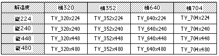

Return to previous page | Return to menu | Go to next page
void
Other functions
Initialization of SGL system
void slInitSystem(tv_mode , texadr , cnt)
Uint16 tv_mode ;
TEXTURE *texadr ;
Uint16 cnt ;
tv_mode Specify screen mode
texadr Start address of memory area where texture data is stored
cnt drawing processing unit specification
Initialize the SGL system.
For the parameter, substitute the #define value indicating the screen mode, the start address of the memory area where the texture information table is stored, and the number of V blanks indicating the rendering unit.
1V-BLANK is 1/60 seconds for non-interlace and 1/30 for double-dense interlace, and the rendering unit is a multiple of this.
For the screen mode specification, substitute the values shown in the figure below.
None
Initialization includes slave CPU initialization, matrix buffer initialization, scroll data initialization, and so on.
For details of each value initialized by the function “slInitSystem”, refer to “Default settings by slInitSystem” in “Appendix” at the end of the function reference.

-As shown in the example of the table, the screen mode specification is macro defined as V_horizontal x vertical (pixel) according to the resolution of each screen mode.
Note) The values in the above table are defined in “sl_def.h” included with the system.
Reference: Chapter 8 Scroll
slInitSystem